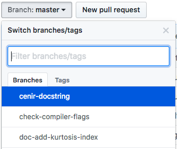
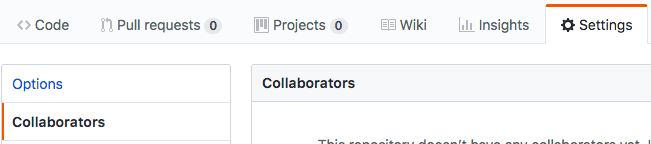

Development workflow#
You already have your own forked copy of the dipy repository, by following Making your own copy (fork) of DIPY. You have Set up your fork. You have configured git by following Configure git. Now you are ready for some real work.
Workflow summary#
In what follows we’ll refer to the upstream dipy master branch, as
“trunk”.
Don’t use your
masterbranch for anything. Consider deleting it.When you are starting a new set of changes, fetch any changes from trunk, and start a new feature branch from that.
Make a new branch for each separable set of changes — “one task, one branch” (ipython git workflow).
Name your branch for the purpose of the changes - e.g.
bugfix-for-issue-14orrefactor-database-code.If you can possibly avoid it, avoid merging trunk or any other branches into your feature branch while you are working.
If you do find yourself merging from trunk, consider Rebasing on trunk
Ask on the DIPY mailing list if you get stuck.
Ask for code review!
This way of working helps to keep work well organized, with readable history. This in turn makes it easier for project maintainers (that might be you) to see what you’ve done, and why you did it.
See linux git workflow and ipython git workflow for some explanation.
Consider deleting your master branch#
It may sound strange, but deleting your own master branch can help reduce
confusion about which branch you are on. See deleting master on github for
details.
Update the mirror of trunk#
First make sure you have done Linking your repository to the upstream repo.
From time to time you should fetch the upstream (trunk) changes from github:
git fetch upstream
This will pull down any commits you don’t have, and set the remote branches to
point to the right commit. For example, ‘trunk’ is the branch referred to by
(remote/branchname) upstream/master - and if there have been commits since
you last checked, upstream/master will change after you do the fetch.
Make a new feature branch#
When you are ready to make some changes to the code, you should start a new branch. Branches that are for a collection of related edits are often called ‘feature branches’.
Making an new branch for each set of related changes will make it easier for someone reviewing your branch to see what you are doing.
Choose an informative name for the branch to remind yourself and the rest of us
what the changes in the branch are for. For example add-ability-to-fly, or
bugfix-for-issue-42.
# Update the mirror of trunk
git fetch upstream
# Make new feature branch starting at current trunk
git branch my-new-feature upstream/master
git checkout my-new-feature
Generally, you will want to keep your feature branches on your public github
fork of dipy. To do this, you git push this new branch up to your
github repo. Generally (if you followed the instructions in these pages, and by
default), git will have a link to your github repo, called origin. You push
up to your own repo on github with:
git push origin my-new-feature
In git >= 1.7 you can ensure that the link is correctly set by using the
--set-upstream option:
git push --set-upstream origin my-new-feature
From now on git will know that my-new-feature is related to the
my-new-feature branch in the github repo.
The editing workflow#
Overview#
# hack hack
git add my_new_file
git commit -am 'NF - some message'
git push
In more detail#
Make some changes
See which files have changed with
git status(see git status). You’ll see a listing like this one:# On branch ny-new-feature # Changed but not updated: # (use "git add <file>..." to update what will be committed) # (use "git checkout -- <file>..." to discard changes in working directory) # # modified: README # # Untracked files: # (use "git add <file>..." to include in what will be committed) # # INSTALL no changes added to commit (use "git add" and/or "git commit -a")
Check what the actual changes are with
git diff(git diff).Add any new files to version control
git add new_file_name(see git add).To commit all modified files into the local copy of your repo,, do
git commit -am 'A commit message'. Note the-amoptions tocommit. Themflag just signals that you’re going to type a message on the command line. Theaflag — you can just take on faith — or see why the -a flag? — and the helpful use-case description in the tangled working copy problem. The git commit manual page might also be useful.To push the changes up to your forked repo on github, do a
git push(see git push).
Ask for your changes to be reviewed or merged#
When you are ready to ask for someone to review your code and consider a merge:
Go to the URL of your forked repo, say
https://github.com/your-user-name/dipy.Use the ‘Branch’ dropdown menu near the top left of the page to select the branch with your changes:
Click on the ‘New pull request’ button near the ‘Branch’ dropdown.
Enter a title for the set of changes, and some explanation of what you’ve done. Say if there is anything you’d like particular attention for - like a complicated change or some code you are not happy with.
If you don’t think your request is ready to be merged, just say so in your pull request message. This is still a good way of getting some preliminary code review.
Some other things you might want to do#
Delete a branch on github#
git checkout master
# delete branch locally
git branch -D my-unwanted-branch
# delete branch on github
git push origin :my-unwanted-branch
(Note the colon : before test-branch. See also: remove remote branch.
Several people sharing a single repository#
If you want to work on some stuff with other people, where you are all committing into the same repository, or even the same branch, then just share it via github.
First fork dipy into your account, as from Making your own copy (fork) of DIPY.
Then, go to your forked repository github page, say
https://github.com/your-user-name/dipy
Click on the ‘Settings’ on the right, then ‘Collaborators’ on the left, and add anyone else to the repo as a collaborator:

Now all those people can do:
git clone git@githhub.com:your-user-name/dipy.git
Remember that links starting with git@ use the ssh protocol and are
read-write; links starting with git:// are read-only.
Your collaborators can then commit directly into that repo with the usual:
git commit -am 'ENH - much better code'
git push origin master # pushes directly into your repo
Explore your repository#
To see a graphical representation of the repository branches and commits:
gitk --all
To see a linear list of commits for this branch:
git log
You can also look at the network graph visualizer for your github repo.
Finally the Fancy log output lg alias will give you a reasonable text-based
graph of the repository.
Rebasing on trunk#
Let’s say you thought of some work you’d like to do. You
Update the mirror of trunk and Make a new feature branch called
cool-feature. At this stage trunk is at some commit, let’s call it E. Now
you make some new commits on your cool-feature branch, let’s call them A, B,
C. Maybe your changes take a while, or you come back to them after a while. In
the meantime, trunk has progressed from commit E to commit (say) G:
A---B---C cool-feature
/
D---E---F---G trunk
At this stage you consider merging trunk into your feature branch, and you remember that this here page sternly advises you not to do that, because the history will get messy. Most of the time you can just ask for a review, and not worry that trunk has got a little ahead. But sometimes, the changes in trunk might affect your changes, and you need to harmonize them. In this situation you may prefer to do a rebase.
rebase takes your changes (A, B, C) and replays them as if they had been made to
the current state of trunk. In other words, in this case, it takes the
changes represented by A, B, C and replays them on top of G. After the rebase,
your history will look like this:
A'--B'--C' cool-feature
/
D---E---F---G trunk
See rebase without tears for more detail.
To do a rebase on trunk:
# Update the mirror of trunk
git fetch upstream
# go to the feature branch
git checkout cool-feature
# make a backup in case you mess up
git branch tmp cool-feature
# rebase cool-feature onto trunk
git rebase --onto upstream/master upstream/master cool-feature
In this situation, where you are already on branch cool-feature, the last
command can be written more succinctly as:
git rebase upstream/master
When all looks good you can delete your backup branch:
git branch -D tmp
If it doesn’t look good you may need to have a look at Recovering from mess-ups.
If you have made changes to files that have also changed in trunk, this may generate merge conflicts that you need to resolve - see the git rebase man page for some instructions at the end of the “Description” section. There is some related help on merging in the git user manual - see resolving a merge.
Recovering from mess-ups#
Sometimes, you mess up merges or rebases. Luckily, in git it is relatively straightforward to recover from such mistakes.
If you mess up during a rebase:
git rebase --abort
If you notice you messed up after the rebase:
# reset branch back to the saved point
git reset --hard tmp
If you forgot to make a backup branch:
# look at the reflog of the branch
git reflog show cool-feature
8630830 cool-feature@{0}: commit: BUG: io: close file handles immediately
278dd2a cool-feature@{1}: rebase finished: refs/heads/my-feature-branch onto 11ee694744f2552d
26aa21a cool-feature@{2}: commit: BUG: lib: make seek_gzip_factory not leak gzip obj
...
# reset the branch to where it was before the botched rebase
git reset --hard cool-feature@{2}
Rewriting commit history#
Note
Do this only for your own feature branches.
There’s an embarrassing typo in a commit you made? Or perhaps the you made several false starts you would like the posterity not to see.
This can be done via interactive rebasing.
Suppose that the commit history looks like this:
git log --oneline
eadc391 Fix some remaining bugs
a815645 Modify it so that it works
2dec1ac Fix a few bugs + disable
13d7934 First implementation
6ad92e5 * masked is now an instance of a new object, MaskedConstant
29001ed Add pre-nep for a copule of structured_array_extensions.
...
and 6ad92e5 is the last commit in the cool-feature branch. Suppose we
want to make the following changes:
Rewrite the commit message for
13d7934to something more sensible.Combine the commits
2dec1ac,a815645,eadc391into a single one.
We do as follows:
# make a backup of the current state
git branch tmp HEAD
# interactive rebase
git rebase -i 6ad92e5
This will open an editor with the following text in it:
pick 13d7934 First implementation
pick 2dec1ac Fix a few bugs + disable
pick a815645 Modify it so that it works
pick eadc391 Fix some remaining bugs
# Rebase 6ad92e5..eadc391 onto 6ad92e5
#
# Commands:
# p, pick = use commit
# r, reword = use commit, but edit the commit message
# e, edit = use commit, but stop for amending
# s, squash = use commit, but meld into previous commit
# f, fixup = like "squash", but discard this commit's log message
#
# If you remove a line here THAT COMMIT WILL BE LOST.
# However, if you remove everything, the rebase will be aborted.
#
To achieve what we want, we will make the following changes to it:
r 13d7934 First implementation
pick 2dec1ac Fix a few bugs + disable
f a815645 Modify it so that it works
f eadc391 Fix some remaining bugs
This means that (i) we want to edit the commit message for
13d7934, and (ii) collapse the last three commits into one. Now we
save and quit the editor.
Git will then immediately bring up an editor for editing the commit message. After revising it, we get the output:
[detached HEAD 721fc64] FOO: First implementation
2 files changed, 199 insertions(+), 66 deletions(-)
[detached HEAD 0f22701] Fix a few bugs + disable
1 files changed, 79 insertions(+), 61 deletions(-)
Successfully rebased and updated refs/heads/my-feature-branch.
and the history looks now like this:
0f22701 Fix a few bugs + disable
721fc64 ENH: Sophisticated feature
6ad92e5 * masked is now an instance of a new object, MaskedConstant
If it went wrong, recovery is again possible as explained above.